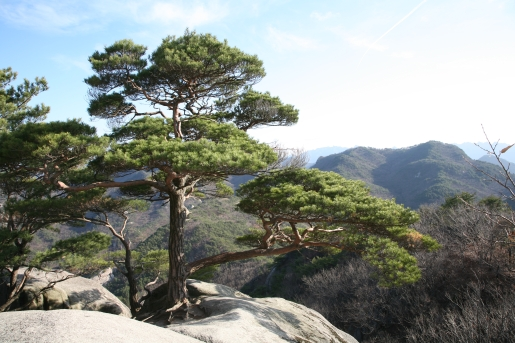

느티나무
느티나무를 참고한 자료느티나무는 장미문의 느티나무나뭇과의 교목이다.느티나무는 한반도가 원산지이다.


소나무는 구과목 소나무과의 식물이다. 대한민국, 일본이 원산이다. 또한 소나무는 대한민국을 대표하는 나무로, 전국 산야에서 흔하게 자라는 상록의 침엽 교목으로, 거의 모든 지역에서 자란다.
동백나무(冬柏, 학명: Camellia japonica 카멜리아 야포니카[*])는 대한민국 남부와 일본, 중국에 자생하는 늘푸른큰키나무(常綠喬木)이다. 꽃은 한자어로 춘백(春柏)이라고 부르기도 한다.

물푸레나무과 목서속의 상록활엽관목이며 호랑가시나무랑 잎 모양이 비슷해 많은 사람들이 착각을 하기도 한다. 우리나라에서는 남부 해안지대에서 자라며 일본이나 대만에서도 자란다. 또한 이 나무의 특징은 높이가 3m 이내로 매우 작다는 것이다.골나무는 목서속에 속하지만 목서는 아니다. 잎의 모양으로 쉽게 구별 가능하다. 구골나무는 끝부분이 삐죽삐죽하여 호랑가시나무와 잎모양이 비슷하다. 반면 목서(금목서, 은목서)는 잎의 테두리에 가시가 작게 나 있기는 하지만, 잎모양이 더 날렵하고 전반적으로는 타원형에 더욱 가깝다. 수피와 가지는 연한 회색빛이 나며 가지에는 털이 많이 나 있다. 잎은 마주나며 표면에 광택이 있다.

감나무(학명: Diospyros kaki)는 동아시아 온대의 특산종으로 중국의 중북부, 일본, 한국의 중부 이남에 널리 재배되는 과수, 활엽교목이다. 한국에는 일찍부터 재배되었으며 품질 좋은 재래종이 육성되었다.

아그배나무는 장미과 사과나무속에 속하는 나무이다. 분류학적으로는 사과나무속에 속하니 배나무와 거리가 있지만, 열매가 달린 모습이 돌배나무와 비슷하며, 아기배처럼 작은 모양 때문에 아그배나무라는 이름이 생겼다는 추측이 있다. 원산지는 한국, 일본으로 한국에서는 황해도 이남의 산에서 자란다

은행나무(銀杏--, 학명: Ginkgo biloba 깅크고 빌로바[*])는 겉씨식물에 속하는 낙엽성 교목이다. 공손수(公孫樹), 압각수(鴨脚樹)로도 부른다. 한국·중국·일본 등지에 분포한다.

조팝나무는 조팝나무과에 속하는 잎 지는 넓은잎 떨기나무이다. 중국이 원산지로 한국 전국의 해발 100~1,000m에 이르는 산야 각지에 분포한다. 꽃 핀 모양이 튀긴 좁쌀을 붙인 것처럼 보이기 때문에 조팝나무라고 한다.

목련(木蓮, 학명: Magnolia kobus)은 목련속의 한 종으로, 대한민국과 일본의 자생종이다.[1] 제주도 한라산의 높이 1,800m의 개미목 부근에서 자생하고 있는데, 대한민국 어느 지역에서도 월동이 가능하다. 물기가 있는 땅을 좋아하고 음지에서는 개화·결실이 불가하며 충분한 햇볕을 받아야 꽃이 잘 핀다.

배롱나무(영어: Lagerstroemia indica)는 부처꽃과에 속하는 낙엽소교목이다. 꽃이 한 번에 피고 지는 것이 아니고 여러 날에 걸쳐 번갈아 피고 져서 오랫동안 펴 있는 것처럼 보여 백일홍나무(百日紅나무) 또는 목백일홍이라고도 부른다.

회양목(-楊木, Korean box tree, 문화어: 고양나무)은 회양목과에 속하는 늘푸른떨기나무이다. 잎은 작고, 꽃은 4 ~ 5월에 피며, 열매는 삭과이다.[1] 황양목이라고도 부른다.

수국(水菊)은 동아시아 원산의 갈잎 떨기나무이다. 수국 꽃송이는 분단화 또는 수구화라고 불리기고 하고, 백거이와 관련되어 자양화나 팔선화라고 하기도 한다.

한국·일본·중국 원산이며 늘푸른 작은키나무다. 사철 잎이 푸르다고 이름이 사철나무이다. 난대 지방에서 자란다. 키는 3~5m쯤 되며 생울타리로 많이 심어 기르며 추위와 공해에 강하다. 나무껍질은 흑갈색으로 얕게 갈라진다.

금목서(金木犀)는 물푸레나무과의 늘푸른 넓은잎 떨기나무로 목서의 변종이다. 중국 원산이다. 잎이 녹색을 띄며 그물맹이며 촉각으로 느끼면 단단하다. 줄기는 고동색으로 단단하고 곧아있다. 금목서로 화장품도 많이 만드는데 그 중에서 향수가 가장 많다. 금목서의 향은 좋다

장미과 사과나무속에 속하는 소교목. 대한민국에서 볼 수 있는 사과나무속 나무는 Malus prunifolia나 Malus floribunda이며 유럽권에서는 주로 Malus sylvestris를 가리킨다.

백목련(白木蓮, Magnolia denudata)은 목련과에 딸린 큰키나무이다. 중국에 중부, 동부에 자생한다.기원후 600년 이후로 중국 사찰의 마당에서 경작되어왔다.

섬잣나무는 소나무속의 나무이다. 늘 푸른 바늘잎나무이며 일본과 한국 원산이다. 잣나무에 비해 잎이 짧고 딱딱하다. 키는 5m에 이르고, 형태가 원추형으로 아름다워 정원이나 공원에 많이 심는다.

상록의 관목으로서 가지가 많이 나뉘어 있다. 특히, 나무껍질의 인피 섬유가 매우 강하여 잡아당기면 길게 벗겨진다. 잎은 긴 타원형으로 광택이 나는 짙은 녹색이며, 긴 잎자루를 가지고 가지에 빽빽하게 붙어 있다. 꽃은 이른 봄에 두상 꽃차례를 이루면서 달린다

구실잣밤나무는 높이 15m, 지름 1m이다. 껍질은 검은회색이고 잎은 어긋나며 2줄로 배열, 피침형, 긴 타원형, 물결 모양의 톱니가 있다. 광택이 있고, 뒷면에 비늘 모양의 털이 있으며, 연갈색이거나 흰빛이 난다

반송은 소나무의 한 품종으로 나무의 생김새가 쟁반 같다 하여 붙여진 이름이다. 품종이란 원래의 종(種)과 비슷하지만 모양이 조금 다른 것을 말한다. 소나무는 외줄기가 올라와 자라는 것에 비하여 반송은 밑에서부터 줄기가 여러 갈래로 갈라지는 것이 특징이다. [네이버 지식백과] 반송 [盤松]
 반 송사진 출처
반 송사진 출처
향나무(학명: Juniperus chinensis 유니페루스 키넨시스[*])는 측백나무과에 속하는 나무이다. 몽골, 중국, 일본 등 북동아시아와 러시아의 남동부 원산이며, 미얀마에도 자생한다.[1]

아욱과의 낙엽 활엽 관목으로, 높이 3~4m까지 자란다. 잎은 달걀 모양이나 마름모꼴로 가장자리에 톱니가 있거나 세 갈래로 갈라져 있으며 어긋난다.
중국·인도가 원산지로 알려졌으며, 세계 여러 곳에서 가꾸어지고 있다. 대한민국에서 주로 중부 이남에 분포한다.
수수꽃다리속에 속하는 식물이다. 꽃봉오리가 맺힐 때는 진보라색이지만, 점점 연보라색으로 변하다가 만개할 때는 하얀색으로 변하며 6m(20ft)까지 자란다. 수수꽃다리속에 속하는 식물이다. 꽃봉오리가 맺힐 때는 진보라색이지만, 점점 연보라색으로 변하다가 만개할 때는 하얀색으로 변하며 6m(20ft)까지 자란다. 매혹적인 향을 낸다. 혹한 지방에서도 잘 견딘다매혹적인 향을 낸다. 혹한 지방에서도 잘 견딘다

층층나무과의 낙엽활엽관목으로 유럽,시베리아, 중국 북부 및 한국북부지역에서[1] 자생하고 있으며, 붉은색 가지를 가지고 있어 관상수로 가치가 높아 전국 공원이나 정원에 많이 식재하고 있다.

월귤나무의 일종인 블루베리(blueberry)는 세계적으로 북반구를 중심으로 150-200종이 분포되어 있으며, 로부시(lowbush) 블루베리, 하이부시(highbush) 블루베리, 래비트아이(rabbiteye) 블루베리 등 세 품종이 주종을 이루고 있다. 블루베리에는 푸른색으로 상징되는 안토시안 색소, 새콤달콤한 당분, 점성이 있는 펙틴, 은은한 향기 등이 있다. 또한 블루베리는 100g당 식이섬유가 4.5g이 들어 있으며 칼슘, 철, 망간 등이 많이 함유되어 있다.

진달래목 진달래과의 한 종으로, 연산홍이라고도 하며, 4~6월에 꽃이 피는 식물이다. 일본이 원산지으로, 주로 관상용으로 심어, 주위에서 진달래, 철쭉 등과 같이 볼 수 있다. 꽃은 주로 빨간색으로 피며, 분홍색, 흰색 등등이 있다.

팽나무(학명: Celtis sinensis 켈티스 시넨시스[*])는 느릅나무과의 갈잎큰키나무이다. 한국·중국 등 동아시아가 원산이다. 중국, 일본, 한국의 온대 남부 이남에서 자라며, 산기슭이나 골짜기에서 자란다.

왕벚나무는 장미과의 나무이다. 제주도 자생종인 제주 왕벚나무(濟州－, 학명: Prunus x nudiflora 프루누스 누디플로라[*], 영어: King cherry)와 교배종인 일본 왕벚나무(王－, 일본어: 染井吉野 소메이요시노[*], 학명: Prunus x yedoensis 프루누스 이에도엔시스[*])를 일컫는다.

로즈메리(영어: rosemary)는 바늘 같은 잎을 가진 여러해살이 식물로, 민트와 같은 과에 속한다. 지중해 연안이 원산지인 허브이며 푸른 잎과 특유의 향을 가졌다. 로즈메리라는 이름은 라틴어로 '바다(marinus)의 이슬(ros)'이라는 뜻의 '로즈마리누스(rosmarinus)'에서 왔다. 꽃은 겨울과 봄에 피며 색깔은 흰색, 분홍색, 자주색, 푸른색 등이 있다.

유럽 남부, 동쪽 중앙 아시아, 히말라야 산맥부터 중국 북부까지 넓은 지역에서 자생한다. 수명은 평균 20년 정도로 짧은 편이지만, 솜사탕 같은 꽃 모양이 아름다워 관상용으로 심어진다. 다 자란 나무를 기준으로 높이 3~5m 정도의 크기로 자란다. 줄기는 곧고 자갈색이며 수많은 껍질눈이 나온다. 털이 많이 나 있다. 잎은 어긋나기하며, 계란형의 잎을 가졌으며 가을에 노랗게 단풍이 든다

잎이 두껍고 살이 많아서 불에 태우면 꽝꽝 소리가 난다하여 붙여진 이름이라고 하기도 하며, 단단하다는 뜻의 전라도 방언 깡깡하다에서 유래 되었다는 설도 있다.

후박나무(학명: Machilus thunbergii)는 녹나무과의 늘푸른 넓은잎 큰키나무이다. 동아시아에서 특히 많이 자생하며, 높게는 약 20m까지 자랄 수 있다.